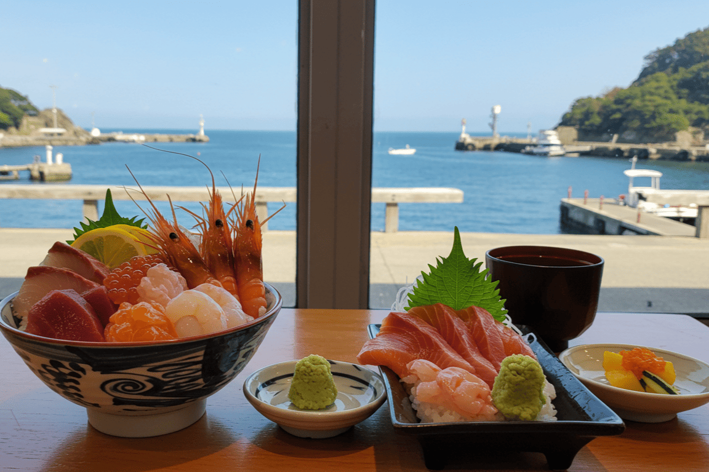

おすすめのめぐり方
都会を離れ、湖・森・海・街・温泉をめぐる。出会いと体験が彩る癒し旅。
1日目START
～海・森・湖をつなぐ、爽快リフレッシュコース！～
-

10:00
風の松原サイクリング
能代市日本最大級の松林が延々と続く景勝地。
海風が吹き抜ける遊歩道やサイクリングロードを進むと、松の香りと波の音が心を解きほぐします。春の新緑、夏の青松、秋の紅葉、冬の雪松と、四季ごとに表情を変える風景はまさに映えスポット。 のんびり散歩も、アクティブに自転車も楽しめます。
-
12:00
能代港 海鮮ランチ
能代市日本海で獲れたばかりの魚介を贅沢に使った海鮮丼や刺身定食が人気。 港を望む店内では、海を眺めながらゆったり食事が楽しめます。
季節ごとの旬のネタが味わえるのも魅力で、特に冬の寒ブリや春のホタテは絶品です。 -

13:00
ハタハタ館＆海辺散策
八峰町桂城跡に広がる緑豊かな公園と、郷土の歴史や文化を展示する博物館が隣接。
春は桜、秋は紅葉が美しく、四季折々の風景とともに歴史散策が楽しめます。 地元の人々にも愛される憩いの場で、のんびりとした時間を過ごせます。
-

14:30
十和田湖SUP体験
小坂町透明度抜群の十和田湖で、話題のSUP（スタンドアップパドル）に挑戦！
静かな湖面に浮かびながら、ブナの森と澄んだ空気に包まれる贅沢な時間を楽しめます。初心者でもインストラクター付きで安心です。
1日目FINISH
2日目START
～れあい×ものづくり×レトロ散歩。心に残る体験尽くしコース！～
-
9:30
秋田犬の里
大館市世界的に有名な秋田犬と間近でふれあえる施設。
愛らしい表情や仕草に癒されるほか、秋田犬の歴史や特徴を紹介する展示も充実。フォトスポットや限定グッズもあり、家族連れやカップルにも人気です。
-
12:00
大館曲げわっぱ体験工房
大館市秋田杉を薄く削って曲げ、桜皮で綴じる伝統工芸「曲げわっぱ」を職人の指導で制作体験。
自分で作ったお弁当箱や小物は、世界にひとつだけの旅のお土産になります。木の香りに包まれながら、ものづくりの楽しさを実感できます
-
13:00
こまち食堂
大館市日本三大地鶏のひとつ「比内地鶏」を使った親子丼は、ふわとろ卵と炭火焼きの香りがたまらない逸品。
地元野菜を添えたヘルシーな一杯で、旅の途中のランチにぴったりです。
-
14:30
明治百年通り
小坂町明治期の鉱山町の面影を残すレトロな通り。
現役の芝居小屋「康楽館」や、豪華な洋館群は歴史的価値も高く、館内見学も可能。写真映えする外観と重厚なインテリアが魅力です。
-

15:30
森のテラスカフェ
上小阿仁村木漏れ日の中にたたずむ隠れ家カフェ。
地元食材を使ったスイーツやハンドドリップコーヒーが楽しめ、テラス席からは緑豊かな山里の景色を一望できます。ゆったりとした時間が流れる、旅の締めくくりに最適な場所。